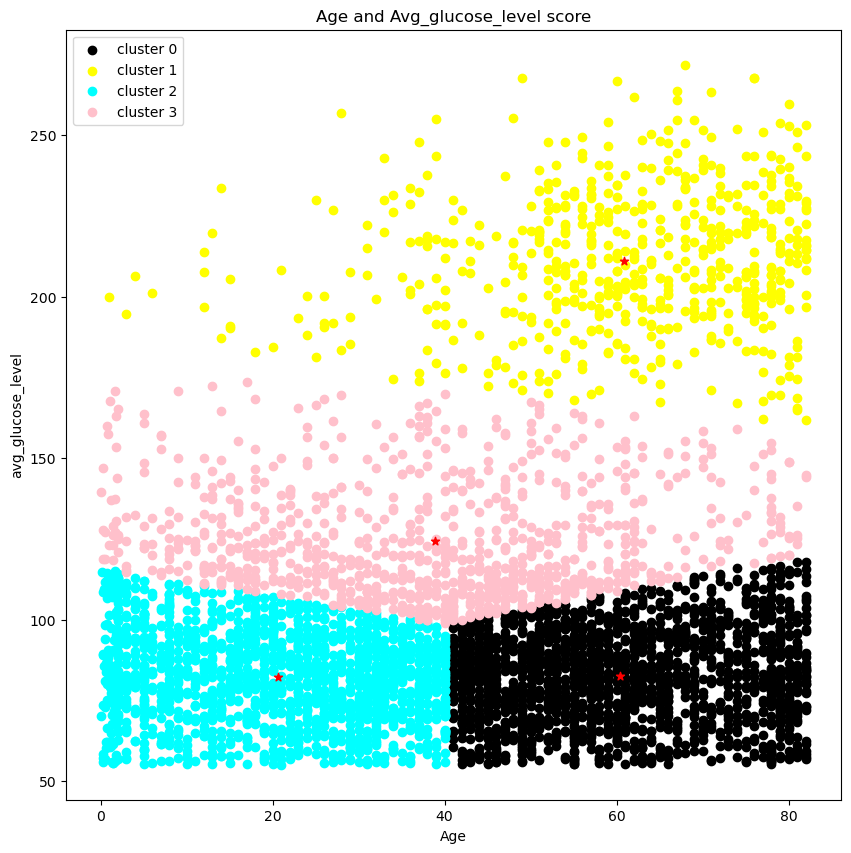
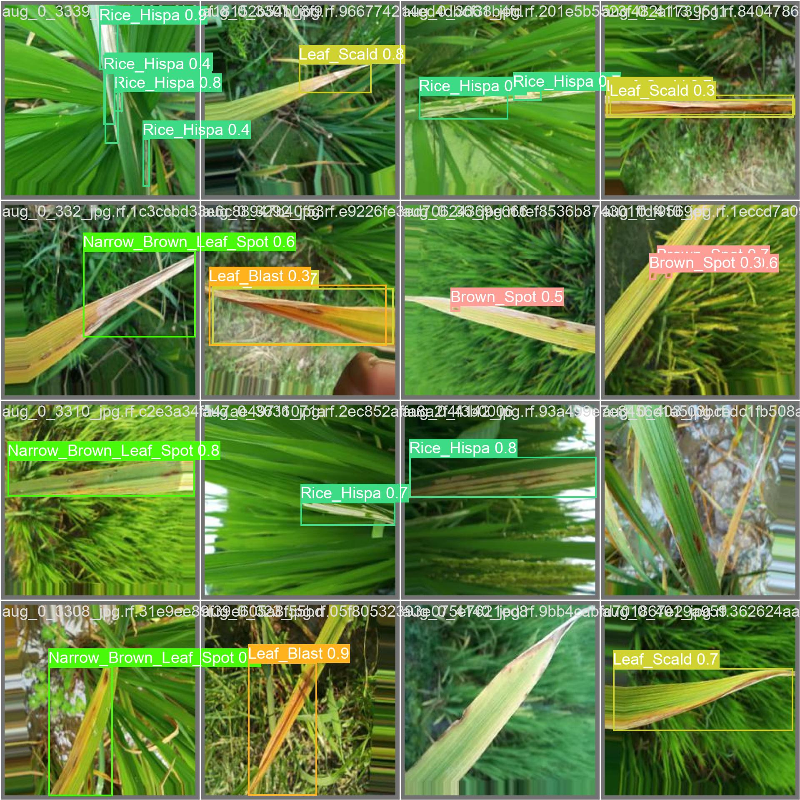

This project designed a predictive model using R Language to assess the risk of cardiovascular diseases. Utilized statistical methods and machine learning techniques to predict potential risk factors.

Performed clustering analysis using K-Means and hierarchical clustering to classify heart stroke data and evaluate clustering performance.
This project performs sentiment analysis on Yelp reviews using a pre-trained BERT Multilingual Uncased Model with web scraping and visualization.
This project developed a travel management system for handling customer travel itineraries. Built using C# and ASP.Net to manage travel bookings, cancellations, and payment integration.
This project developed a train station management system to automate the process of scheduling and managing trains.

Object detection on rice leaf images to identify and classify rice leaf spot disease using YOLO. The project includes dataset annotation and comprehensive evaluation metrics.